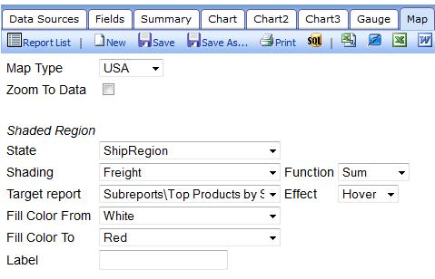
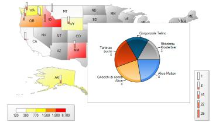

The Izenda Maps add-on provides interactive geographical visualization to the reporting experience.
Imagine going beyond tables and charts and showing users what the world really looks like.
In today's rapidly changing business climate, it's critical to see where change happens.
Play the video below or try it for yourself in our live demo.
- Add Sizzle To Sales Presentations and Demos for Increased Revenue
- Modernize Your Application with Rich Visualizations
- Instant Insights Into Global Trends
- Rapid Identification of Localized Patterns or Problems
- Rapid Visualization of Countries and Regions
- Regional Color Shading
- Pinpoint Indicator Bars
- Zoom To Data
After adding a special license key and dll, a maps tab will appear in the report designer.
Here you can specify what fields, functions and subreports should be used for the shading, indicator bars and interactivity.

A rich, interactive map is now a part of your report or dashboard.
Izenda maps is compatible with all other Izenda Reports features like filters, printing and exporting.

Please contact sales@izenda.com or your account manager to purchase Izenda Maps.